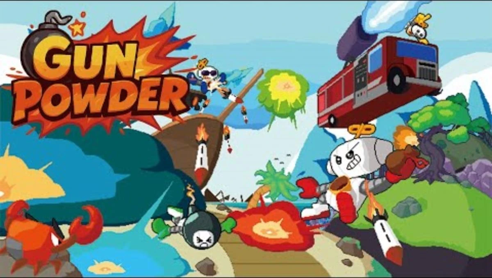
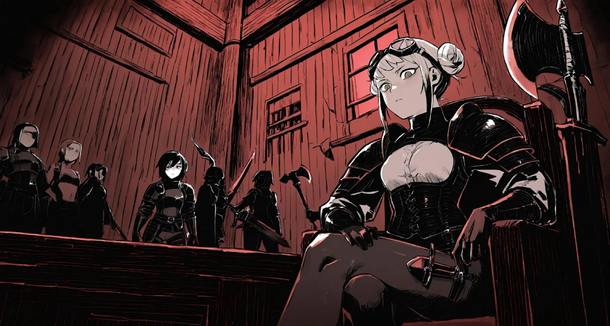
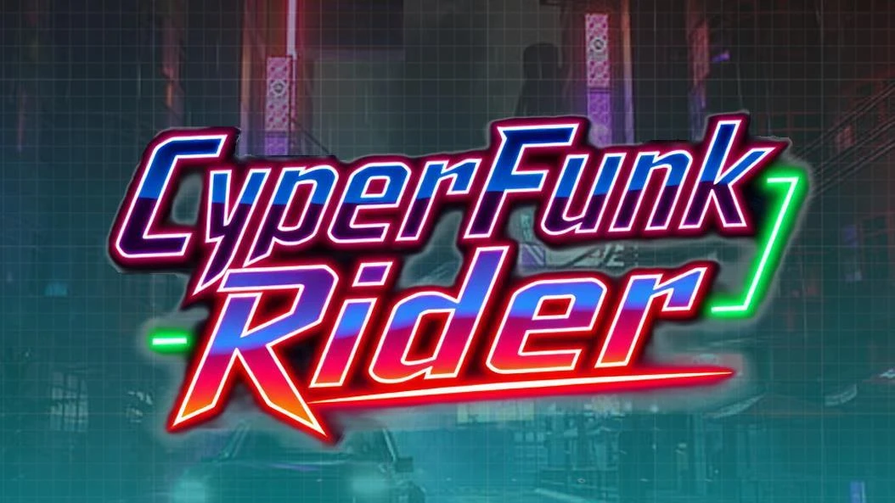

GunPowder
2D 멀티플레이 대전폭탄과 카트리지로 만드는 다채로운 대전.
플레이어 시스템부터 친구·파티·채팅까지 연결했습니다.
GAME CLIENT DEVELOPER
안녕하세요, 클라이언트 개발자 김경호입니다.
눈앞의 플레이부터 보이지 않는 시스템까지,
더 나은 게임 경험을 코드로 만듭니다.



01 / SELECTED WORK
직접 부딪히고, 함께 해결한 기록.
프로젝트 속에서 제가 만든 경험을 소개합니다.
폭탄과 카트리지로 만드는 다채로운 대전.
플레이어 시스템부터 친구·파티·채팅까지 연결했습니다.
몬스터와 플레이어 사이, 생존을 향한 던전 탐험.
15인 매치메이킹과 파티, Bot AI 시스템을 구현했습니다.
네온 아래에서 완성한 성장과 전투의 흐름.
아이템·장비·스킬 시스템과 리소스 관리를 담당했습니다.
검의 궤도부터 끊임없이 커지는 성장 수치까지.
1인 개발로 게임의 전체 흐름을 설계한 프로토타입입니다.
02 / BEHIND THE PLAY
기능을 구현하고 끝내기보다, 왜 이렇게 동작하는지 묻습니다. 구조를 이해하고 책임을 나누며, 팀이 함께 읽고 확장할 수 있는 코드를 고민합니다.
Unity 멀티플레이부터 Unreal, DirectX, VR까지. 다양한 환경에서 쌓은 경험을 더 자연스러운 플레이와 안정적인 시스템으로 이어가고 싶습니다.
코드로 더 알아보기플레이어·전투·인벤토리·장비 시스템
FSM · Strategy · ScriptableObject · Object Pooling
매치메이킹·팀 배정·친구·파티·채팅
Photon PUN2 · Firebase · Firestore · 뒤끝
Unreal 전투·AI·에디터 확장, DX11 렌더링
Unity 6 · Meta XR SDK · C++ · HLSL
EXPERIENCE & HIGHLIGHTS
Unity 6 VR 클라이언트 개발
제2회 컴:온 우수상 · GunPowder
Com2uS × 성균관대학교 과정 운영 보조·교육 자료 구현
GunPowder 전시 참여
경력 및 프로젝트 상태는 제공된 이력서·포트폴리오 기준입니다.
03 / TAKE A CLOSER LOOK
프로젝트별 구현 과정을 담은 자료입니다.
포트폴리오를 편하게 내려받아 보세요.
NEXT STAGE / LET’S CONNECT